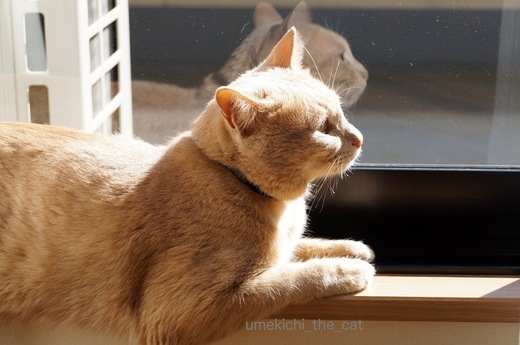
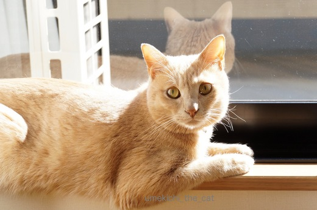
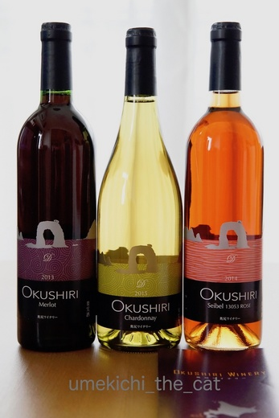
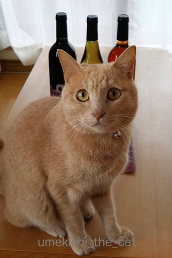
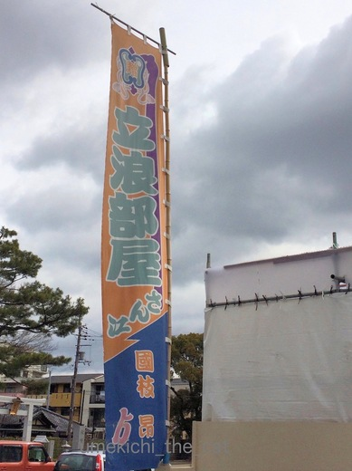
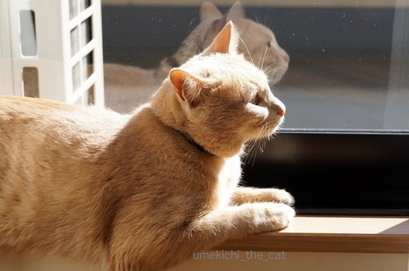
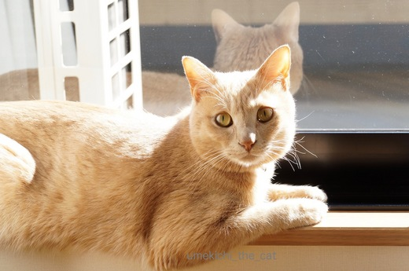
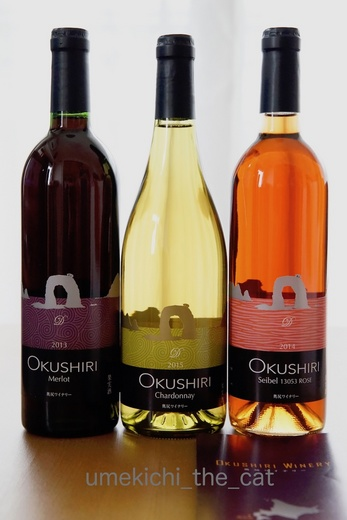
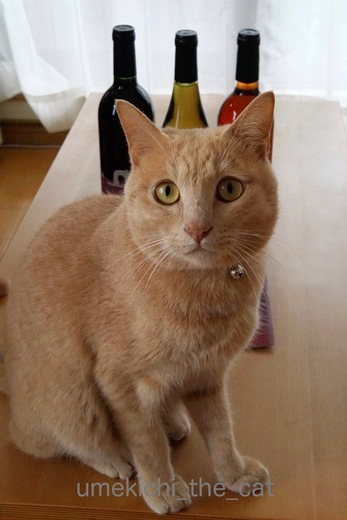
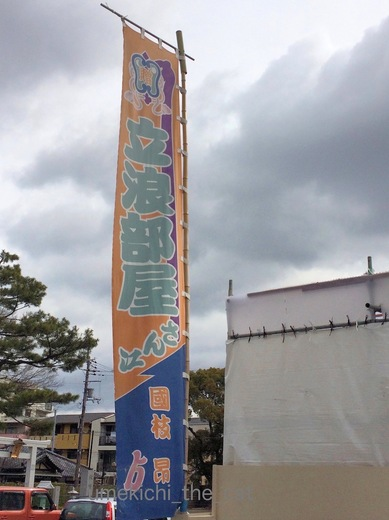

春は鬢付け油の香りとともに [梅吉]
気温は上がったり下がったりしていますが日差しは確実に春の暖かさ。
家の中に差し込む陽の角度も変わってきて
日向ぼっこが長く楽しめるようになった梅吉さん。

![[猫]](https://blog.ss-blog.jp/_images_e/101.gif) ええかんじや〜
ええかんじや〜

窓ガラスに映った横顔と、まあるい後頭部が二重丸ですよー![[黒ハート]](https://blog.ss-blog.jp/_images_e/136.gif)
ワインセットを入手したらうち一本がロゼワインでした。

北海道の奥尻町、奥尻ワイナリーで作ったワイン。
奥尻は渡島半島（函館がある半島です）の日本海側に浮かぶ島でーす。
ここは海がキレイでウニが美味しくて・・・って行ったことないのですが。
北海道に住んでいるうちに一度行ってみたかったな〜。

などど考えているとやっぱり参加してくる梅吉さんでした。
数える程した飲んだことがないロゼワインなので比較できませんが
軽そうでいてしっかり味があってなかなか美味しかったです。
 ↑ガブッと一押し↑
↑ガブッと一押し↑
今年もこの季節になりました。

関西に住んでいて「春だな！」と感じるのは東大寺のお水取りのニュースを聞いた時と
立浪部屋が大阪場所のため近所の神社に宿舎を構えてこの「のぼり」が立った時。
近所のスーパーで「あれ？この香り・・・・」と思ってみると
レジの後ろにお相撲さんがならんでいたりします。びっくりよ〜。
大きなお相撲さんがママチャリに乗って居たり
向かいから走ってきた軽自動車にお相撲さんがぎゅうぎゅうに詰まって居たりする光景は
なかなか心楽しく気持ちが浮き立ってきます。
電車に乗って居てもあれ？っと感じるとお相撲さんが乗ってます。
春は鬢付け油の香り。
今日は神社の駐車場でヨガマットひいてストレッチしてましたw
写真撮れなくて残念！
家の中に差し込む陽の角度も変わってきて
日向ぼっこが長く楽しめるようになった梅吉さん。


窓ガラスに映った横顔と、まあるい後頭部が二重丸ですよー
ワインセットを入手したらうち一本がロゼワインでした。

北海道の奥尻町、奥尻ワイナリーで作ったワイン。
奥尻は渡島半島（函館がある半島です）の日本海側に浮かぶ島でーす。
ここは海がキレイでウニが美味しくて・・・って行ったことないのですが。
北海道に住んでいるうちに一度行ってみたかったな〜。

などど考えているとやっぱり参加してくる梅吉さんでした。
数える程した飲んだことがないロゼワインなので比較できませんが
軽そうでいてしっかり味があってなかなか美味しかったです。
今年もこの季節になりました。

関西に住んでいて「春だな！」と感じるのは東大寺のお水取りのニュースを聞いた時と
立浪部屋が大阪場所のため近所の神社に宿舎を構えてこの「のぼり」が立った時。
近所のスーパーで「あれ？この香り・・・・」と思ってみると
レジの後ろにお相撲さんがならんでいたりします。びっくりよ〜。
大きなお相撲さんがママチャリに乗って居たり
向かいから走ってきた軽自動車にお相撲さんがぎゅうぎゅうに詰まって居たりする光景は
なかなか心楽しく気持ちが浮き立ってきます。
電車に乗って居てもあれ？っと感じるとお相撲さんが乗ってます。
春は鬢付け油の香り。
今日は神社の駐車場でヨガマットひいてストレッチしてましたw
写真撮れなくて残念！

カフェオレ色の梅吉

梅吉 2023年8月10日 永眠


梅吉と出会った譲渡会

犬猫の理由なき殺処分ゼロ
妄想広告
UMEKICHI 光

爆発的に早い！
時々攻撃的！
Thanks to Mr.Boss365
爆発的に早い！
時々攻撃的！
Thanks to Mr.Boss365

梅吉さん、日向ぼっこ気持ち良さそうですねぇ(^O^)
風さえなければ暖かくて春が近づいた気になるんですけどねぇ^^;
うちのかみさんは広島出身なので、「奈良のお水取りが終われば春～(^-^)」と毎年言ってますｗ
by ニッキー (2017-02-24 16:59)
うちは今日もこたつで熟睡でした～春はまだ遠い…"(-""-)"
by palpal (2017-02-24 17:09)
日差しの時間が長くなりましたね日向ぼっこ気持ち良さそうです。
by みぃにゃん (2017-02-24 17:29)
日向ぼっこの梅吉さん♪
幸せな時間が過ぎてますね(#^.^#)
見ているだけでほっこりします♪
by きぃ (2017-02-24 19:13)
陽だまりの中の梅さん、毛がキラキラ輝いてますね。
横顔で「♬〜」て感じもいいですねv
お相撲さんがヨガマットでストレッチ〜ヨガマットからはみ出てそう…(ぬふ
by BillK-ko (2017-02-24 20:40)
梅吉さん、特等席を独占、窓辺の陽だまりはポカポカですね！
鬢付け油の甘い香り、お寺や神社が多いと必ず相撲部屋の宿舎になりますもんね^^
奥尻にワイン、スッキリしたデザインが素敵です(＾◇＾)
by ゆきち (2017-02-24 21:17)
まったりモードの梅吉さんのお写真、いいですね。^^)
奥尻ワイン、知りませんでした。軽い喉越しなら私も飲めそう♪
しかしママチャリって、頑丈ですねー。^^;
by yes_hama (2017-02-24 23:14)
猫の後頭部って可愛いですよねー
私も猫後頭部可愛くって大好きですヾ(*´∀｀*)ﾉ
by sumi-cyan (2017-02-25 00:49)
春近しですね〜〜(^^)
ガブッ！
by KENT0mg (2017-02-25 04:23)
あ〜(^^)鬢付け油って独特な香りですね。
千葉にも相撲部屋があるので
お相撲さんが電車に乗ってたりします。
両国のマックは「買ったらその日は無料！」とお相撲さん宛に書いてありました。今もやってるかな？なんだか微笑ましい^ ^
by も〜 (2017-02-25 11:21)
おぉ、梅吉さんが、春の日向色に染まっている(^^)v
そうそう、街でお相撲さんに会うと、なんだか楽しいですよね♪
ご近所に宿舎ができて、わらわらと･･･うらやましいわ♡
by のらん (2017-02-25 12:42)
茶トラの後頭部の模様が好きなんです＾＾
NYも大分暖かくなってきたので窓を大きめに開けてあげるとずっと窓辺にいるようになりました＾＾
春はもうすぐですね♪
by Moon (2017-02-26 06:40)
ガラスに写った横顔と後頭部本当二重丸です。
春にはお相撲さん、見かけますよね〜
去年、近鉄電車の駅で集団でいるところは圧巻でした。
by kiki (2017-02-26 11:39)
ニッキーさん＞広島県出身の方も「お水取り＝春〜♪」なんですね。
さすが東大寺の威光おそるべし！
palpalさん＞おこたは片付けるタイミングが難しい・・・と聞いてますyo
まだまだ朝晩は寒いし、気持ち良さそうに熟睡するにゃんこを見ていたら
なかなか片付けられませんよね〜。
みぃにゃんさん＞風の冷たさを除けば日差しは結構強いかも！
紫外線が気になってきました^^;
きぃさん＞梅吉と一緒に日向ぼっこしたい気持ちをグッとこらえるのが大変です。笑
ほっこりをもらってがまん、がまん・・・
BillK-koさん＞最初見たとき地面に直接寝そべってストレッチしているのかと思いましたよ〜。
立ち上がった時、あら、マットあったのね！って。笑
私たちがバスマットの上でストレッチするみたいな感じ？
お相撲さん大きいけれどおもちゃみたいでかわいい・・・
ゆきちさん＞香りとともに冷たい風の中浴衣一枚、裸足に雪駄、
すべてが季節の風物詩！という感じです。
近くの神社では4横綱（なのかな？）の奉納土俵入りが行われそう・・・
奥尻ワインは近々赤を開ける予定で〜す。
yes_hamaさん＞濃い味のワインは苦手でしたか？
お相撲さんの乗ったママチャリはタイヤが潰れそうで・・・^^;
約ひと月彼らが乗ったあとはタイヤ交換が必要かと。
大きな体で自転車に乗っている姿はサーカスのクマさんみたいで
微笑ましいで〜す(ᵔᴥᵔ)
sumi-cyanさん＞おお！にゃんこの後頭部マニアですか、仲間、仲間〜。
ついついウリウリしたくなりますよね。
KENT1mgさん＞そうです！春は日々ガブガブと近づいていますね^^
も〜さん＞両国ではマックも（関西ではマクド、笑）お相撲さんを応援なんですね。
でも、彼らが本気出したらお店大変なことになりそうなんだけど・・・^^;
のらんさん＞あ、のらんさん♬少しお忙しさから抜け出たのかな？
日常生活にお相撲さんが入ってくる生活、なかなか楽しいですよね。
お相撲さんは縁起物みたいな感じがするから
朝に出会うと１日良いことありそう♪って思えます。笑
Moonさん＞おぉ、海の向こうも暖かくなってきましたか。
NYのベストシーズンは６月かな？
「I like New York in June,how about you?」ですものね！
梅吉の後頭部は茶トラ模様がほとんどないけれど
それがまた良い味わいだと飼い主は思っております(≧▽≦)
kikiさん＞わ！kikiさんに二重丸をいただいたからはな丸にランクアップかしら〜。笑
駅に集団でお相撲さん・・・紛れ込んだら小柄な私は前が全く見えなくなること必至です。
でも遭遇したい！！
by ちぃ (2017-02-27 09:28)
わたしもまだ奥尻には行ったことがないのです。
他の島は制覇してるので、一度は行ってみたいな～。
梅吉君気持ちよさそう！
by リュカ (2017-02-27 10:30)
リュカさん＞他の島は制覇！やりますね〜。
私は焼尻、天売島も未開の地です。
奥尻島、美味しいワインと海の幸があるのだから
オーベルジュを作っていただいきたいわ！
もちろん野趣溢れる船宿でも良いけどね。笑
by ちぃ (2017-02-27 11:16)